1.2.2. Элементы электрических цепей
Электрическая цепь состоит из отдельных устройств или элементов, которые по их назначению можно разделить на три группы. Первую группу составляют элементы, предназначенные для выработки электроэнергии (источники питания). Вторая группа — элементы, преобразующие электроэнергию в другие виды энергии (механическую, тепловую, световую, химическую и т. д.). Эти элементы называются приемниками электрической энергии (электроприемниками). В третью группу входят элементы, предназначенные для передачи электроэнергии от источника питания к электроприемнику (провода, устройства, обеспечивающие уровень и качество напряжения, и др.).
Источники питания цепи постоянного тока — это гальванические элементы, электрические аккумуляторы, электромеханические генераторы, термоэлектрические генераторы, фотоэлементы и др. Все источники питания имеют внутреннее сопротивление, значение которого невелико по сравнению с сопротивлением других элементов электрической цепи.
Электроприемниками постоянного тока являются электродвигатели, преобразующие электрическую энергию в механическую, нагревательные и осветительные приборы и др. Все электроприемники характеризуются электрическими параметрами, среди которых можно назвать самые основные — напряжение и мощность. Для нормальной работы электроприемника на его зажимах (клеммах) необходимо поддерживать номинальное напряжение. Для приемников постоянного тока оно составляет 27, 110, 220, 440 В, а также 6, 12, 24, 36 В.
Графическое изображение электрической цепи, содержащее условные обозначения ее элементов и показывающее соединения этих элементов, называется схемой электрической цепи. В табл. 2.1. показаны условные обозначения, применяемые при изображении электрических схем.
Таблица 2.1. Условные обозначения в электросхемах |
|
| Элемент гальванический или аккумуляторный 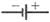 или 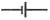 |
Контакты замыкающие с выдержкой времени: |
| Батарея элементов 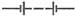 |
- при замыкании 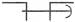 |
| Генератор электромеханический постоянного тока 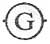 |
- при размыкании 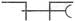 |
| Выключатель, контакт замыкающий |
- при замыкании и размыкании 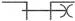 |
| Выключатель автоматический |
Предохранитель плавкий 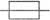 |
| Контакты контактора и электрического реле: | Обмотка контактора, магнитного пускателя и реле 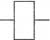 |
| - замыкающие |
Лампа накаливания осветительная 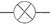 |
| - размыкающие 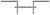 |
|
| - переключающие 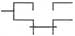 |
|
| Лампа газоразрядная осветительная 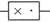 |
Конденсатор постоянной емкости 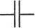 |
| Амперметр и вольтметр 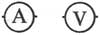 |
Катушка индуктивности |
| Резистор постоянный 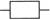 |
Диод полупроводниковый 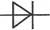 |
| Резистор переменный 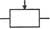 |
|
Элементами электрической цепи являются различные электротехнические устройства (рис.2.3 - 2.5), которые могут работать в различных режимах. Режимы работы как отдельных элементов, так и всей электрической цепи характеризуются значениями тока и напряжения. Поскольку ток и напряжение в общем случае могут принимать любые значения, то режимов может быть бесчисленное множество.
Режим холостого хода — это режим, при котором тока в цепи нет. Такая ситуация может возникнуть при разрыве цепи. Номинальный режим бывает, когда источник питания или любой другой элемент цепи работает при значениях тока, напряжения и мощности, указанных в паспорте данного электротехнического устройства. Эти значения соответствуют самым оптимальным условиям работы устройства с точки зрения экономичности, надежности, долговечности и пр.
Режим короткого замыкания — это режим, когда сопротивление приемника равно нулю, что соответствует соединению положительного и отрицательного зажимов источника питания с нулевым сопротивлением. Ток короткого замыкания может достигать больших значений, во много раз превышая номинальный ток. Поэтому режим короткого замыкания для большинства электроустановок является аварийным.
Рис. 2.3. Резисторы
Рис. 2.4. Конденсаторы
Рис. 2.5. Катушки индуктивности
Самыми распространенными и простыми типами соединений в электрической цепи являются последовательное и параллельное соединение.